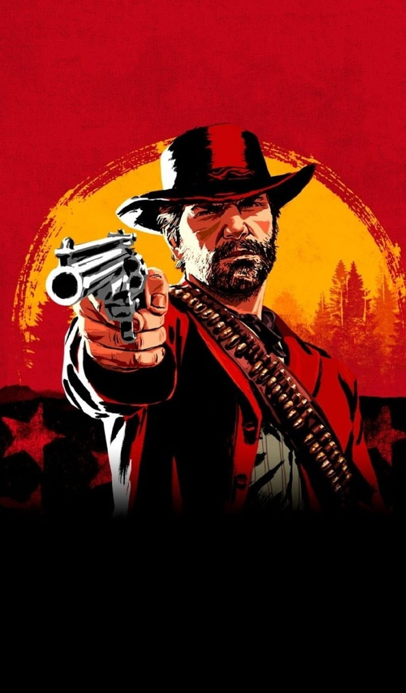
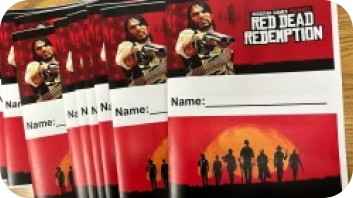
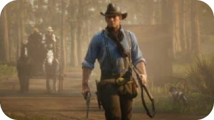
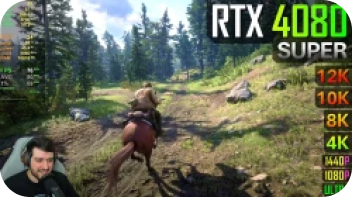
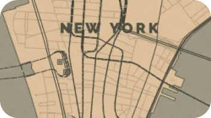
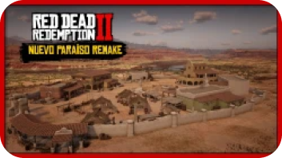
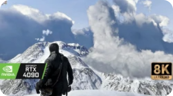

Что за игра?
— компьютерная игра действие которой разворачивается в 1899 году. Мы играем за Артура Моргана. Сюжет очень большой и захватывающий. Всем советую поиграть в эту игру. МНЕ ОЧЕНЬ ПОНРАВИЛОСЬ!
RDR 2
Новости
Учитель использует Red Dead Redemption 2 для преподавания английского языка в старших классах
Роджер Кларк, актер, сыгравший главного героя в RDR 2, озвучит аудиокнигу о Red Dead Redemption
Эксперт показал, на что способна видеокарта RTX 4080 SUPER в Red Dead Redemption 2
Энтузиаст создал карту мира в стиле Red Dead Redemption 2
Модификация добавляет в Red Dead Redemption 2 локацию из первой части
В Red Dead Redemption 2 установили более 100 модов и запустили в 8К-разрешении
История разработки
Создание Red Dead Redemption 2 началось примерно к 2010 году, когда Rockstar Games закончила разработку игры Red Dead Redemption. На тот момент работа над игрой шла медленным темпом из-за основного приоритета на разработку Grand Theft Auto V.
В начале 2011 года Дэн Хаузер, соучредитель Rockstar Games и главный сценарист компании, начал обсуждать с Rockstar San Diego потенциальное продолжении первого Red Dead Redemption. В интервью изданию Vulture, Дэн рассказал, что к концу лета 2011 года у него имелось полное видение проекта, а к осени 2012 года уже было расписано большее количество диалогов и заданий к игре, однако они еще не были завершены.
Окончательный сценарий составлял около 2000 страниц. Однако, если бы боковое содержание и дополнительный диалог были бы включены, и сложить страницы, Дэн Хаузер оценивает это в восемь футов высотой. В соответствии со сценарием были предприняты огромные усилия, чтобы еще больше воплотить его в жизнь, потратив в общей сложности 2200 дней на работу по захвату движения. Это также потребовало огромного количества актеров, в общей сложности 1200 актеров были вовлечены в сеансы захвата движения, 700 из них с диалогом.
Первые сеансы захвата движения начались в 2013 году в студии захвата движения Rockstar, в студии, которая находится в Нью-Йорке. Большинство сеансов были направлены на журнал Edge.
К середине 2017 года основная сюжетная линия была завершена. В это время история была приблизительно 65 часов длиной, однако 5-часовую часть истории игры было решено вырезать.
Под 2017 и большую часть 2018 года игра была отшлифована и протестирована в полном объеме. В 2017 году также была начата работа над онлайн-аналогом игры Red Dead Online. Были собраны сюжетные сегменты и проведена дополнительная работа по захвату движения.
Неизвестно, сколько именно было задействовано в разработке игры. Согласно открытому письму Rockstar, в общей сложности 3168 человек зачисляются за их участие в игре. Однако это не включает ни одного из 1200 актеров. Таким образом, мы можем оценить, что точная цифра составляет около 4368.